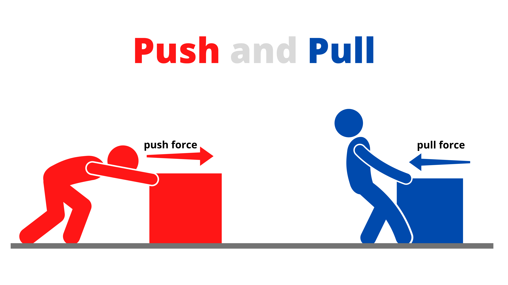
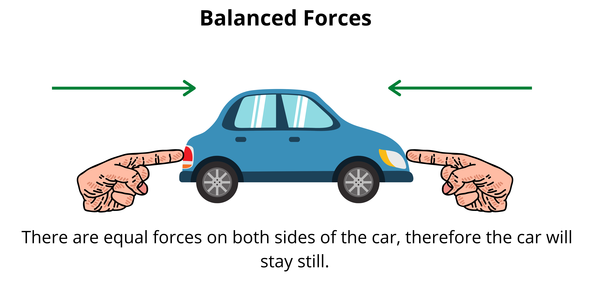
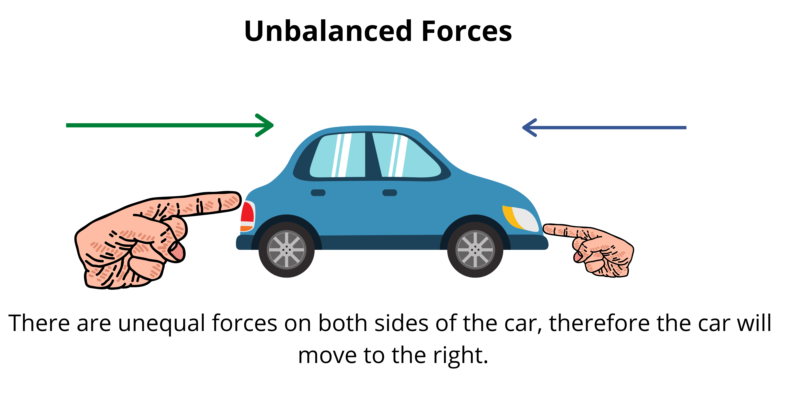
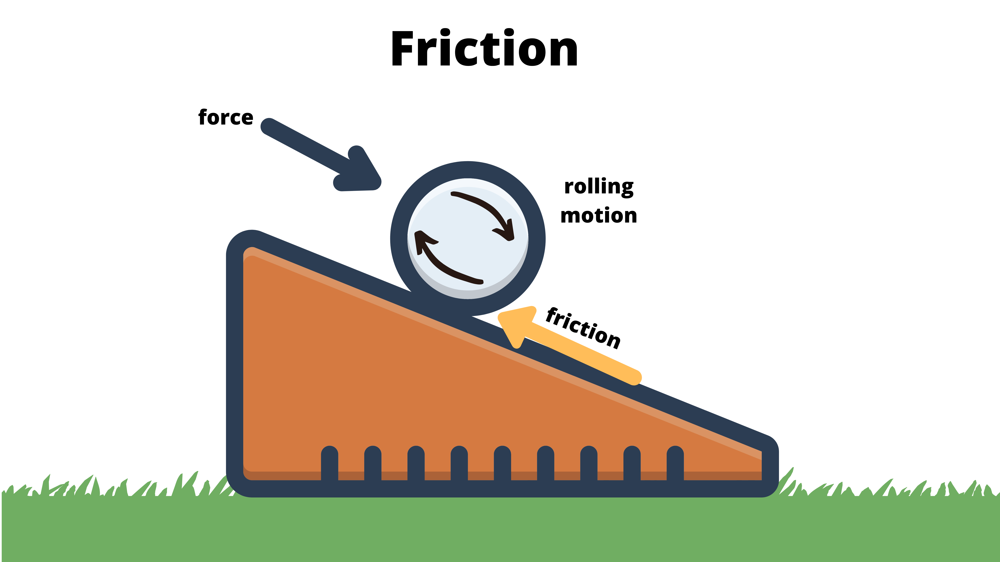
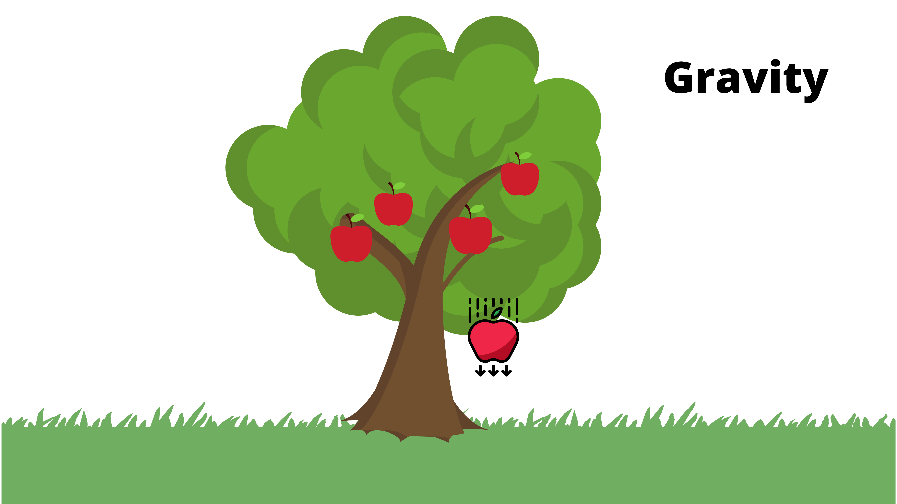
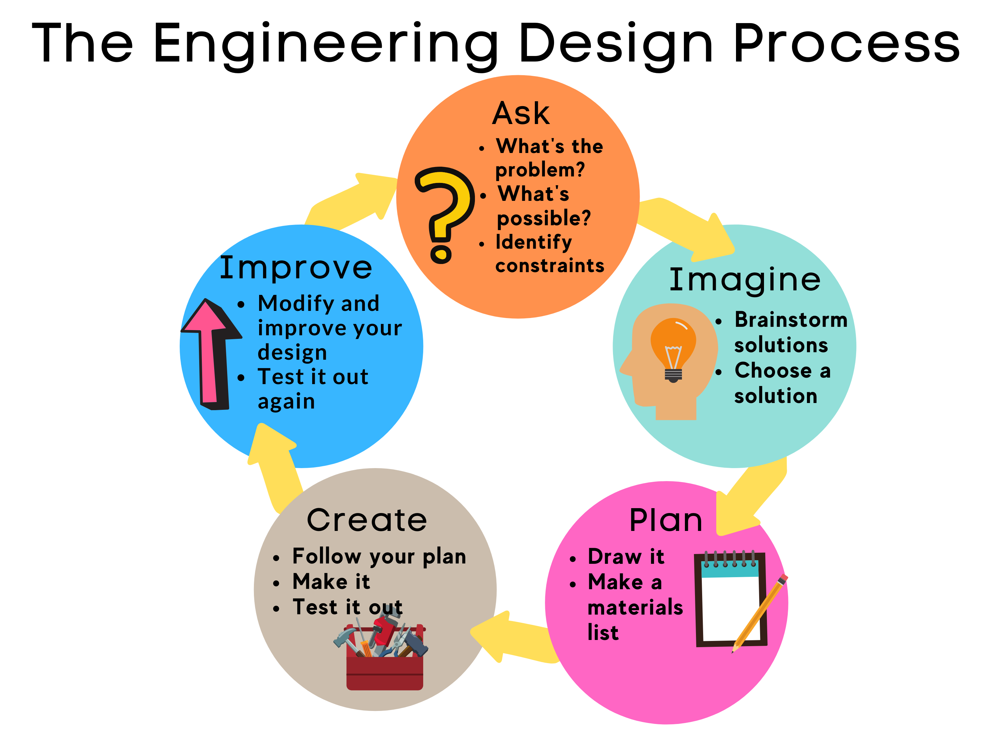
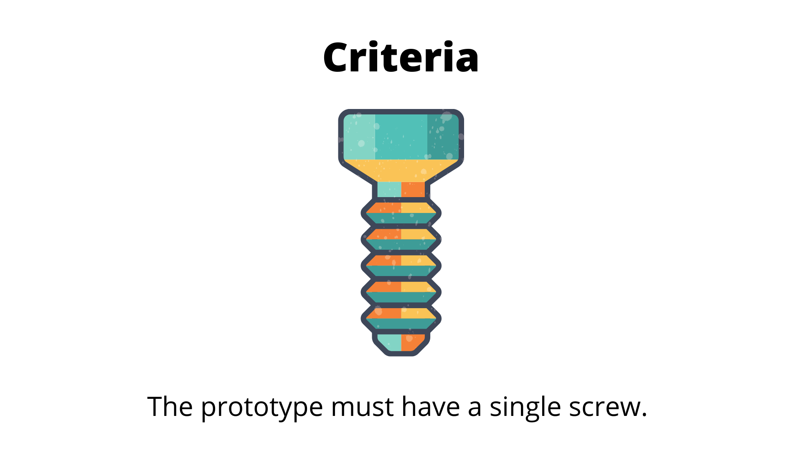
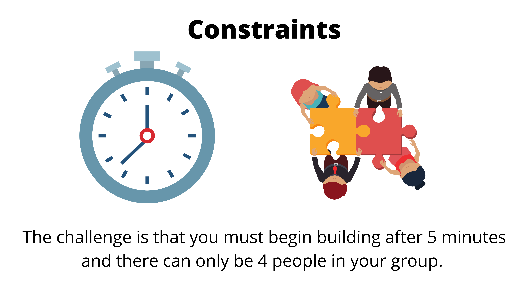

What You Should Know
Getting Started
Imagine playing on the slide at your favorite park. What causes you to move down the slide? Do you know what causes you to slow down?
Think of a marble run in the same way that you would think of a slide at the park. Instead of you speeding down the slide, there is a marble doing that instead. Did you know that a slide is a type of simple machine and that there are forces acting on an object moving up or down a slide?
Think about what those forces may be and how they affect the motion of an object on a slide?
What Are Forces?
Forces are all around us and they are needed for almost everything. Whether it is pushing, pulling, lifting, throwing a ball, running, or simply standing, forces are in action.
- A force is a push or pull.
- Forces cause changes in an object’s motion and direction.
- An object slows down, stops, speeds up, or changes direction based on the size and direction of the force acting on it.
When a cat pushes a ball of yarn with its paw, the yarn will roll across the floor. Force is applied by the cat’s paw to make the yarn move forward.
Balanced and Unbalanced Forces
All forces must have a size and direction. The size and direction of the forces acting on an object determine if the forces are balanced or unbalanced. Balanced forces do not cause changes in an object’s motion. The object stays still because the forces acting on an object are the same strength and opposite direction.
Unbalanced forces do cause changes in an object’s motion. This happens when an object at rest and a stronger force pushes or pulls the object. The unbalanced force also changes the speed and direction of objects in motion or at rest.

Friction and Gravity
The force that attracts objects with mass toward one another is called gravity. In other words, gravity draws things toward one another. Gravity is the force that keeps your feet on the ground, causes balls to remain at rest on the ground, and so much more.
Friction is the force that causes objects to slow down when they rub against or slide past one another. Friction works against the motion of an object and acts in the opposite direction.
 
Gravity is the force that keeps the ball on the ramp. Friction is created by the ball moving over the surface of the ramp, and the ball eventually slows down.
Example
Have you ever been sledding? If so, then you experienced both gravity and friction at the same time. Gravity is the force that keeps you, the sled, and even the snow on the ground. When the sled slices through the snow, friction is created. The friction caused by the sled and surface of the snow is what causes the sled to slow down and stop.

Inclined Plane
An inclined plane is a sloped, flat surface. A ramp is an example of an inclined plane. Objects can be pushed up a ramp. They can also accelerate down a ramp. Forces are needed to move objects up or down a ramp.
The Engineering Design Process
The Engineering Design Process is the process used by engineers to develop and improve objects or systems. The process can be used to complete tasks such as designing cars and buildings. It can also be used to solve problems, build software, and many other projects.

Standards, Limitations, and Models
As engineers move through the engineering design process they must consider the criteria and constraints of their project as they work on the prototype.
- Criteria are the standards a design must meet in order to be successful.
- Constraints are the limitations placed on a design due to the availability of resources and environmental conditions.
- A prototype is a model or pattern that is in progress for the project that is the process of completion.
Example:
When working on a project, you will most likely have challenges that engineers call- criteria and constraints that will be in place as you build a model. Imagine that you are building a new lift system that must include a screw. You must start building after 5 minutes, and there can only be four people in your group. In this case, your criteria is that the prototype must have a single screw in it. The constraints are the time and number of people in the build group.
 